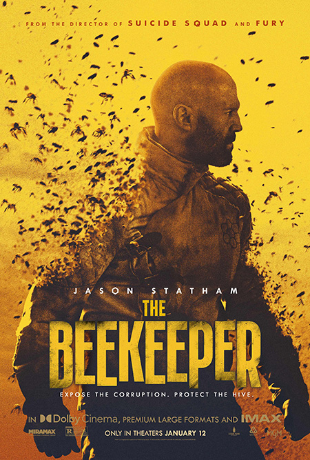

My Best Movies 2024
My top 4 movies
John Wick 3
If my life were like a movie, I'd choose John Wick as my number one. I love the strict rules and the mystique of the High Table.
Certainly the boggie man continues his hunt for the members of the high table together with Winston.
Migration
This is an animated movie featuring a duck family that decides to explore during an annual migration season.
Furiosa: A Mad Max Saga
This is a second part of a thriller-sci movie sequelle of 2015
The BeeKeeper

This is an action packed movie starring Jason Statham, its Incredible.
Other great tittles
- Quiet Place
-
The Equalizer

- Wrath of Man
Top actors according to Spidux
-
Denzel Washington
- Man on Fire 2005
- The training Day 2002
- Mississipi Masala
-
Jason Statham
Jason Statham is a great actor, and if we were partners in a movie, I’d want to be his friend, not the other way around.
- Crank 1
- The Italian Job
- The Transporter
- Safe
-
Sylvester Stallone
-
Rambo
- First Blood 1982
- First Blood Part II 1985
- Rambo III 1988
- Rambo 2008
- Last Blood 2019
- Gudge Dread
-
Exapendables
- The expendables 2010
- The expendables 2012
- The expendables 2014
- The expendables 2023
-
Rambo
Top 3 movie websites
Movie rating and download webistes.